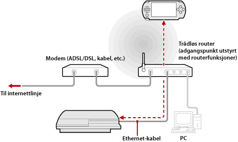

Nettverk > Bruke avstandsspill (via et tilgangspunkt)
Bruke avstandsspill (via et tilgangspunkt)
Koble PS3™-systemet til et tilgangspunkt med en Ethernetkabel og bruk PSP™-systemets trådløse LAN-utstyr for å koble til PS3™-systemet med tilgangspunktet.
Eksempel på en vanlig konfigurasjon

Tips
- En trådløs router er et utstyr som kan legges til tilgangspunktfunksjonaliteten til en router. Et tilgangspunkt er et system som tillater deg å koble til et trådløst nettverk. En router et et system som brukes når du deler en internettilkobling mellom flere systemer.
- Et modem kan utstyres med en routerfunksjonalitet. Koble til PS3™ systemet til et utstyr som er utstyrt med routerfunksjonalitet.
- Hvis både tilgangspunktet og modemet er utstyret med en routerfunksjonalitet, slå av routerfunksjonaliteten på et av systemene. PS3™ systemet og PSP™ systemet må kobles til innenfor samme nettverk. Hvis to eller flere routere brukes samtidig, kan PS3™ systemet og PSP™ systemet kobles til separate nettverk og du kan ikke bruke avstandsspill.
Forberedelse for bruk (PS3™ system og PSP™ system)
For å bruke avstandsspill for første gang, må du registrere (par) PSP™ systemet med PS3™ systemet. Registrer systemet under  (Innstillinger) >
(Innstillinger) >  (Innstillinger for avstandsspilling) > [Registrer enhet].
(Innstillinger for avstandsspilling) > [Registrer enhet].
Forberedelse for bruk (PSP™ system)
Opprett en nettverksforbindelse for å koble PSP™ systemet til et tilgangspunkt. Hvis PSP™-systemet allerede har en lagret nettverkstilkobling til bruk ved tilkobling til et nettverk via et tilgangspunkt, må du ikke opprette en ny nettverktilkobling. For detaljer om oppretting av nettverkstilkoblinger, henvis til brukermanualen for PSP™ systemet.
Bruke avstandsspill
1. |
På PS3™-systemet velger du |
|---|---|
2. |
På PSP™-systemet velger du |
3. |
Velg [Kople til via private nettverk]. |
4. |
Velg tilkoplingen for tilgangspunktet som skal brukes for fjernspill fra listen over tilkoplinger.
Hvis tilkoblingen er vellykket, vil PS3™ systemskjermen vises på PSP™ systemet. |
 (Nettverk) >
(Nettverk) >  (Avstandsspill).
(Avstandsspill). (Avstandsspill).
(Avstandsspill).
Tips
- Avstandsspill kan brukes innenfor rekkevidden av tilgangspunktsignalet.
- Hvis du aktiverer innstillingen fjernstart på ditt PS3™-system, kan du sette systemet til å slås på automatisk (Wake on LAN). I dette tilfellet behøver du ikke utføre trinn 1 ovenfor. For detaljer, se (Innstillinger) > (Avstandsspill innstillinger) > [Fjernstart] i denne manualen.
Avslutte avstandsspill
Trykk på PS-knappen (HOME-knappen) på PSP™-systemet, og velg [Quit Remote Play] > [Quit and Turn Off the PS3™ System].
Tips
Velg [Quit Without Turning Off the PS3™ System] hvis du bruker PS3™-systemet til å kopiere filer, eller bakgrunnsnedlastning og andre oppgaver som krever at systemet er slått på.